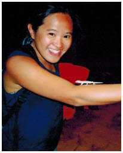

|  | Adelene CHIAResearch Assistant (Alumna) |
Projects
Preparation of State of the Coast (Singapore)
Many developed and developing countries have developed ‘State of the Coast’ reports that take stock of the coastal and marine environment. These reports provide a synthesis of the status, trends and threats related to the coastal and marine environment. They commonly adopt a holistic approach to the assessment of impact, status and management response, which is useful for striving towards sustainability of the coastal and marine environment.
The State of the Coast Report of Singapore 2014 is developed to assess and determine the current environmental status of Singapore’s coastal area and provides recommendations on its sustained use. It presents the current economic, environmental and social conditions and identifies priority issues concerning the coastal area that can be addressed through the implementation of integrated coastal management (ICM) strategies.
The State of the Coasts Report could be developed further, refined and regularly updated to monitor patterns and trends through continual research and monitoring. The report also aims to raise awareness and inform the general public regarding the sustainable use of the coastal area, including the protection of ecosystems and their resources.
History and Research Interests
BSc in Environmental Biology and Coastal Zone Management (Double Major, Curtin University, Western Australia), 2009-2012
Previously, I have worked with the Department of Environment and Conservation (DEC), Marine Science Program Department and worked on aspects of the State of the Environment Report. My work with DEC involves creating time series data sets on historical to present day cyclone impacts on the coral reefs up in the Dampier Archipelago, off the coast of Karratha, Western Australia. Secondly, I also worked on completing time series data sets on the rates of sedimentation on the reefs close to the Port of Dampier, a major shipping port in the north-west of Western Australia.